Graphics and computer-based image generation are a large class of problems that utilize a lot of the tools we have discussed in this course. We will be (over)simplifying many of these ideas but you can understand the basics now and learn the linear algebra tools about the more sophisticated approaches needed to work on these ideas later.
Example 1: Transforming Basic 2D Images It is vital to know a little about how images are created/stored. The long and the short of it is that the different image file types correspond to a different method of storing data about how to create the image. This is by no means a comprehensive list of relevant ideas but enough to get you to see how broadly applicable the elements we have talked about are.
: Instead of pixel based descriptions of an image, SVG files store the image with curves, lines, and other mathematical graphs relative to a grid.
PS/Postscript: is simplified instructions on how to create a figure
Fonts: instructions on how to create the shape and width of each part of a character. This is like parameterizations of the curves to make the character along with an idea of width as you move along the curve of the character.
Fourier Transform of an image: https://plus.maths.org/content/fourier-transforms-images Images might not be stored as an array of colors but might be more efficiently stored as the frequencies involved in the wave that describes how the intensity changes across the elements in an array.
Example 2: Transforming 2D graphics to 3D space/Textures and Lighting Think about you would use the instructions for a font on a curved object in 3D. This amounts to transforming or thinking about how the lighting/reflections would look on a curved object in 3D. Key to this is translated 2D information like font definitions to an element in 3D or looking at vector transformations relative to a camera location/orientation.
Example 3: Medical imaging or inverse image problems in geology Think about trying to create an image of the materials inside a patient or of the different geologic structures like water or crude oil inside some rock structure. These images are created by measuring signal strengths that correspond to density changes along a path then reorienting and getting data on a new set of points. The big idea is to create an image of the 3D structure from these linear measurements. Rotation transformations and projections are key tools here and create a host of other problems when you need to select an slice of the 3D model to display on a 2D computer screen (for diagnostic purposes). In particular, it is a difficult question to figure out how best to fill in between measurements and retain accuracy. AI tools for sharpening pictures are an example of another linear algebra application of how to interpolate data related to these imaging problems. Sonar data is the opposite from a perspective approach. Your signal and detector are not moving; instead you are looking at your surroundings with respect to relative orientation.
Activity3.4.1.
We will be looking at some simple examples of transformations in 2 and 3 dimensions that can give you an idea of how different kinds of transformations can be built. We will look at what the smiley face image below would look like under the following transformations. As a point of information, there are about 230 points involved in creating this image, so you would need to tranform each of these 230 poins individiaully to create the new image.
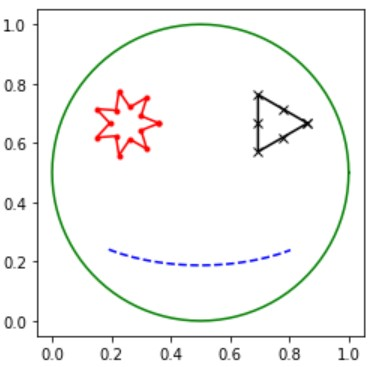
Figure3.4.1.The base image for transformations in Activity 3.4.1
(a)
Expansion: What would the smile image look like under the transformation \(T_A: \mathbb{R}^2 \rightarrow \mathbb{R}^2\) given by \(A=\begin{bmatrix} 2 \amp 0 \\0 \amp 1 \end{bmatrix} \text{?}\)
Answer.
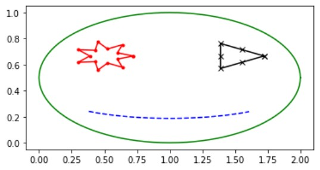
Figure3.4.2.
(b)
Expansion: What would the smile image look like under the transformation \(T_A: \mathbb{R}^2 \rightarrow \mathbb{R}^2\) given by \(A=\begin{bmatrix} 1 \amp 0 \\0 \amp 3 \end{bmatrix} \text{?}\)
Answer.
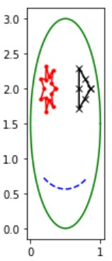
Figure3.4.3.
(c)
Contraction: What would the smile image look like under the transformation \(T_A: \mathbb{R}^2 \rightarrow \mathbb{R}^2\) given by \(A=\begin{bmatrix} \frac{1}{2} \amp 0 \\0 \amp 1 \end{bmatrix} \text{?}\)
Answer.
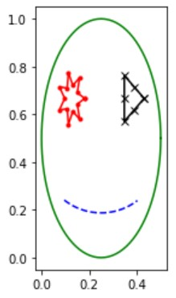
Figure3.4.4.
(d)
Rotation: What would the smile image look like under the transformation \(T_A: \mathbb{R}^2 \rightarrow \mathbb{R}^2\) given by \(A=\begin{bmatrix} \frac{\sqrt{2}}{2} \amp -\frac{\sqrt{2}}{2} \\ \frac{\sqrt{2}}{2} \amp \frac{\sqrt{2}}{2} \end{bmatrix} \text{?}\)
Answer.
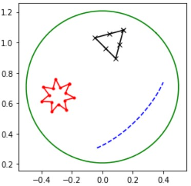
Figure3.4.5.
(e)
Rotation: What would the smile image look like under the transformation \(T_A: \mathbb{R}^2 \rightarrow \mathbb{R}^2\) given by \(A=\begin{bmatrix} 0 \amp 1 \\ -1 \amp 0 \end{bmatrix} \text{?}\)
Answer.
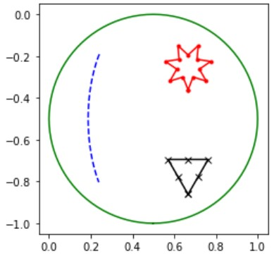
Figure3.4.6.
In general, the rotation transformation by \(\theta\) is given by \(\begin{bmatrix} \cos(\theta) \amp -\sin(\theta) \\ \sin(\theta) \amp \cos(\theta) \end{bmatrix} \text{.}\)
(f)
Shear: What would the smile image look like under the transformation \(T_A: \mathbb{R}^2 \rightarrow \mathbb{R}^2\) given by \(A=\begin{bmatrix} 1 \amp 2 \\ 0 \amp 1 \end{bmatrix} \text{?}\)
Answer.
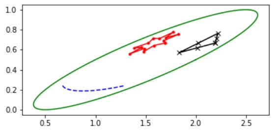
Figure3.4.7.
(g)
Shear: What would the smile image look like under the transformation \(T_A: \mathbb{R}^2 \rightarrow \mathbb{R}^2\) given by \(A=\begin{bmatrix} 1 \amp 0 \\ 2 \amp 1 \end{bmatrix} \text{?}\)
Answer.
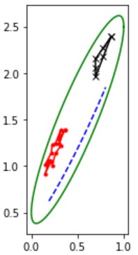
Figure3.4.8.
(h)
Projection: What would the smile image look like under the transformation \(T_A: \mathbb{R}^2 \rightarrow \mathbb{R}^2\) given by \(A=\begin{bmatrix} 1 \amp 0 \\ 0 \amp 0 \end{bmatrix} \text{?}\)
Answer.
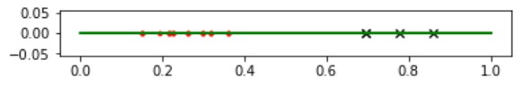
Figure3.4.9.
(i)
Reflection: What would the smile image look like under the transformation \(T_A: \mathbb{R}^2 \rightarrow \mathbb{R}^2\) given by \(A=\begin{bmatrix} -1 \amp 0 \\ 0 \amp 1 \end{bmatrix} \text{?}\)
Answer.
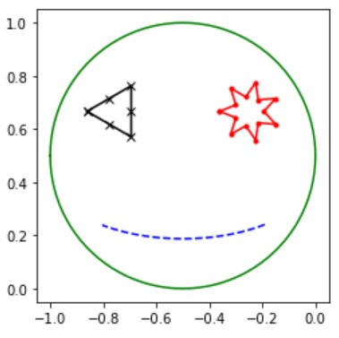
Figure3.4.10.
Activity3.4.2.
(a)
Create a transformation that would expand by a factor of 2 in the \(\langle 1 , 1 \rangle \) direction?
(b)
Create a transformation that would reflect the image across the line y=-x.
(c)
Create a transformation that shears by 1/2 in the direction \(\langle 2 , -1 \rangle \text{.}\)
Activity3.4.3.
We would like to find a transformation that will map our smiley face image onto the plane given by \(x+2y+3z=0\text{.}\)
Answer.
In order to make this transformation, we need to think about where \(\colvec{1\\0}\) and \(\colvec{0\\2}\) will go under this transformation. We will need to find a 3 by 2 matrix such \(\begin{bmatrix} a_{1,1} \amp a_{1,2} \\a_{2,1} \amp a_{2,2} \\a_{3,1} \amp a_{3,2} \end{bmatrix} \colvec{1\\0} =\colvec{-1\\0\\-1/3}\) and \(\begin{bmatrix} a_{1,1} \amp a_{1,2} \\a_{2,1} \amp a_{2,2} \\a_{3,1} \amp a_{3,2} \end{bmatrix} \colvec{0\\1} =\colvec{0\\1\\-2/3} \text{.}\)
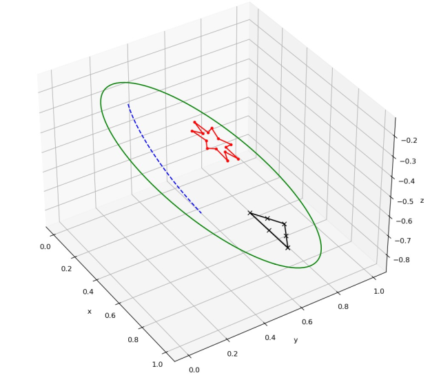
Figure3.4.11.The smiley face in space
Remember that you want generalizable (no exceptions), algorithmic (easily stated, repeatable rules) ways to change location data. Remember that we can describe a vector with points of location data, so we can transform vectors with these same tools.